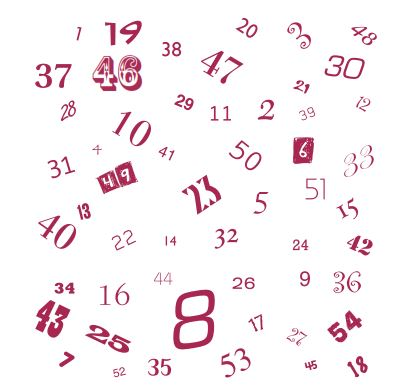
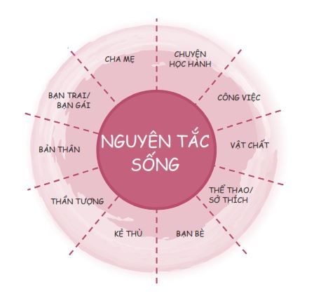
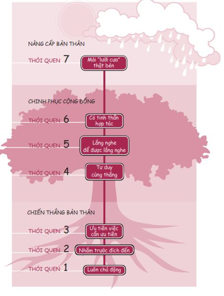
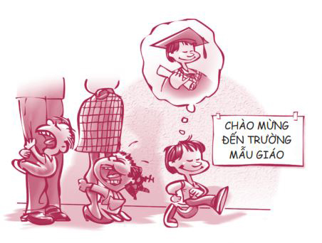
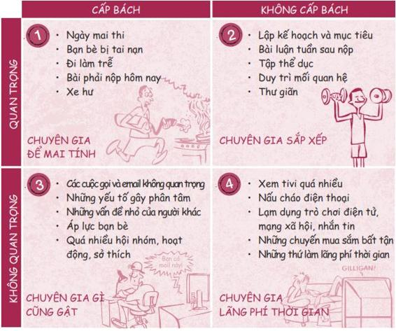
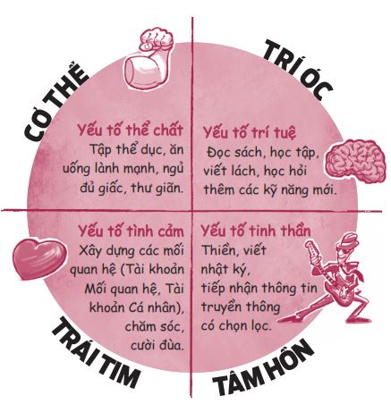
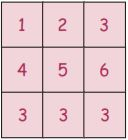
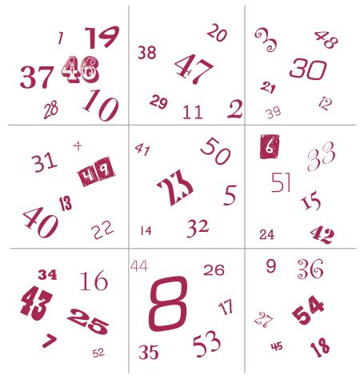

Dưới đây là một bảng số gồm các số từ 1 đến 54 nằm ngẫu nhiên, không theo một trình tự nào. Nhiệm vụ của bạn là tìm ra từng con số theo thứ tự tăng dần, bắt đầu từ 1, rồi đến 2, 3, 4, v.v. cho đến khi tìm được số 54. Hãy thử xem bạn có thể tìm ra được bao nhiêu con số trong vòng chín mươi giây. Ở đây hoàn toàn không có con số nào bị thiếu, cũng không có mánh khóe gì. Bạn sẵn sàng chưa? Bắt đầu nào.

Bạn tìm được bao nhiêu số? Đa số mọi người tìm được đến khoảng số 30. Giờ tôi muốn bạn thử chơi lại, nhưng lần này tôi sẽ chỉ cho bạn phương pháp giúp bạn định vị được các con số. Hãy lật đến trang 58 bạn sẽ thấy mọi thứ được giải thích rõ ràng.
Chào mừng bạn đã quay trở lại. Lần này bạn tìm được bao nhiêu số nào? Có lẽ bạn đã tìm được tất cả 54 số. Thế sự khác biệt là gì nhỉ? Khác biệt duy nhất ở đây chính là tôi đã cho bạn một cách suy nghĩ, một khung sườn giúp bạn tìm ra các con số. Một khi bạn biết chỗ để nhìn, tốc độ của bạn có thể tăng gấp ba lần.
Đó chính là bản chất của 7 Thói quen. Chúng chính là khung sườn hoặc phương pháp tư duy giúp bạn giải quyết các vấn đề tốt hơn và nhanh hơn. Chúng đặc biệt quan trọng trong việc giúp bạn đưa ra những lựa chọn sáng suốt liên quan đến sáu quyết định trọng đại. Chính vì vậy, rải rác trong suốt quyển sách này, bạn sẽ thấy tôi nhắc đi nhắc lại về những thói quen đó.
Để bắt đầu, tôi sẽ mang đến cho bạn một khóa học cấp tốc về 7 Thói quen. Trước khi tìm hiểu kỹ về các thói quen, bạn cần phải hiểu nhanh hai khái niệm: nhận thức và nguyên tắc sống.
NHẬN THỨC LÀ GÌ?
Nhận thức chính là năng lực tri giác của bạn, là quan điểm, là cách bạn nhìn nhận thế giới. Có một lần, cậu em rể Kameron của tôi đã bỏ công bỏ sức suốt vài tuần liền để dựng một bức tường làm bằng các thanh tà vẹt ở sân sau nhà cậu ấy. Khi Kameron làm gần xong, bà hàng xóm của cậu ấy ngại ngần yêu cầu Kameron gỡ bỏ mấy thanh tà vẹt và dùng đá thay thế. Bà ta đơn giản lý giải là chồng bà ta không muốn nhìn một bức tường làm bằng mấy thanh tà vẹt đến hết đời.
Các bạn làm cùng Kameron không thể lý giải nổi sao người hàng xóm này lại có thể yêu cầu một việc như vậy khi mà bức tường đã gần hoàn thành. Mặc dù bản thân Kameron cũng không nghĩ rằng lý lẽ của bà ta là hợp lý, nhưng cậu ấy biết họ sẽ còn làm hàng xóm với nhau lâu dài, nên dù phải tốn công tốn sức thêm một tuần lễ nữa để làm theo yêu cầu của bà ta, cậu ấy vẫn đồng ý và đã dùng đá thay cho mấy thanh tà vẹt.
Một tuần sau, bà hàng xóm của Kameron sang nhà cậu để bày tỏ lòng biết ơn vì cậu đã chịu khó xây lại bức tường theo yêu cầu của chồng bà ấy. Bà ấy nói thêm: “Cậu biết đó, ông nhà tôi sẽ không bao giờ chịu nói ra đâu, nhưng hồi còn trẻ, ông ấy từng bị giam mười tám tháng trong một trại cải tạo ở Đức sau chiến tranh. Trong suốt khoảng thời gian đó, ông ấy phải mang vác rất nhiều thanh tà vẹt và cho đến tận bây giờ ông ấy vẫn bị ám ảnh rất dữ dội mỗi khi nhìn thấy chúng”.
Bạn thấy không, chỉ một chút thấu hiểu đã ngay lập tức làm thay đổi nhận thức của Kameron. Cơn giận của anh đã hóa thành lòng trắc ẩn trong tích tắc. Đó gọi là sự chuyển đổi nhận thức. Đôi khi nhận thức và quan điểm của chúng ta bị sai lệch và cần được chỉnh lại. Đó là lý do vì sao chúng ta không nên phán xét người khác. Bởi vì chúng ta rất hiếm khi biết được toàn bộ câu chuyện.
Quyển sách này sẽ làm lung lay rất nhiều nhận thức của bạn về bản thân và về cuộc sống nói chung. Ví dụ, bạn có thể tin rằng bạn và mẹ mình không thể hòa hợp với nhau. Hoặc bạn có thể cho rằng bạn không bao giờ có thể học tốt được. Bạn cũng có thể cảm thấy thật không thực tế khi cố kiềm chế để không quan hệ tình dục ở tuổi teen. Thực tế, có nhiều khả năng nhận thức của bạn đã bị lệch lạc và chỉ cần có hiểu biết hơn, bạn sẽ cảm thấy khác hẳn, giống như trường hợp của Kameron vậy. Hãy nhớ, để thay đổi bản thân, trước tiên bạn cần thay đổi góc nhìn hay nhận thức của mình.
NGUYÊN TẮC LÀ GÌ?
Nguyên tắc là các quy luật tự nhiên. Trọng lực là một nguyên tắc. Nếu bạn tung một quả táo lên không trung, nó sẽ rơi xuống, bất luận bạn sống ở New York hay New Delhi, dù là ở hiện tại hay vào năm 2000 trước Công nguyên thì nguyên tắc ấy vẫn không thay đổi.
Có các quy luật chi phối thế giới vật chất, tương tự như vậy, cũng có những nguyên tắc chi phối sự tương tác của con người. Ví dụ, sự trung thực là một nguyên tắc. Nếu bạn trung thực với người khác, bạn sẽ có được niềm tin của họ. Nếu bạn không trung thực, bạn có thể lừa người khác vài lần, nhưng rồi dần dần bạn sẽ bị phát hiện, luôn luôn là như vậy. Các ví dụ khác của nguyên tắc là sự siêng năng, sự tôn trọng, sự tận tụy, sự tập trung, lòng kiên nhẫn, tinh thần trách nhiệm, tình yêu thương, sự đổi mới, sự lựa chọn và công lý. Ngoài ra còn rất nhiều nguyên tắc khác.
Dưới đây là nội dung câu chuyện cười nổi tiếng về cuộc đàm thoại qua radio giữa một tàu hải quân Hoa Kỳ và chính quyền Canada bên ngoài bờ biển Newfoundland. Câu chuyện này minh họa cho điều tôi muốn nói về các nguyên tắc.
Người Mỹ: Xin các ngài vui lòng đi lệch mười lăm độ về hướng Bắc để tránh đâm vào chúng tôi.
Người Canada: Chúng tôi đề nghị các ngài đi lệch mười lăm độ về hướng Nam để tránh đâm vào chúng tôi.
Người Mỹ: Tôi là thuyền trưởng một tàu Hải quân Hoa Kỳ. Tôi lặp lại, hãy điều chỉnh hướng đi của các ngài.
Người Canada: Không, tôi lặp lại, các ngài phải điều chỉnh hướng đi của mình.
Người Mỹ: Đây là Hàng không mẫu hạm USS Abraham Lincoln, chiến hạm lớn thứ hai thuộc Hạm đội Đại Tây Dương của Hoa Kỳ. Chúng tôi được yểm trợ bởi ba tàu khu trục, ba tàu tuần tiễu và nhiều tàu yểm trợ khác. Tôi yêu cầu các ngài đi lệch mười lăm độ về hướng Bắc. Mười… lăm… độ về hướng Bắc, nếu không, các biện pháp đối phó sẽ được thực thi để đảm bảo an toàn cho con tàu này.
Người Canada: Còn đây là một ngọn hải đăng. Các ngài thích làm gì tùy ý.
Các nguyên tắc cũng giống như những ngọn hải đăng vậy. Chúng hiển nhiên, mang tính phổ quát và không chịu sự chi phối của thời gian. Bạn không thể vi phạm các nguyên tắc; nếu không bạn sẽ tự làm hại chính mình, bất kể bạn có là ai đi nữa.
Bởi vì các nguyên tắc không bao giờ sai lệch, chúng chính là kim chỉ nam trong cuộc sống của chúng ta. Bằng cách đặt các nguyên tắc vào trọng tâm, tất cả những lĩnh vực quan trọng khác của cuộc sống chúng ta, như bạn bè, bạn trai/bạn gái, chuyện học hành, gia đình… sẽ tự nhiên đi vào đúng khuôn khổ. Luôn ưu tiên tuân thủ các nguyên tắc chính là bí quyết giúp cho tất cả các lĩnh vực khác đều trở nên tốt đẹp hơn.
Mỗi thói quen trong 7 Thói quen này đều dựa trên các nguyên tắc vượt thời gian và không bao giờ bị lỗi thời. Thông qua quyển sách này, bạn sẽ thấy nếu chúng ta không lấy các nguyên tắc làm trọng tâm thì cuộc sống của ta sẽ hỗn độn, thậm chí bị tàn phá.

7 THÓI QUEN
7 Thói quen của bạn trẻ thành đạt là bảy đức tính mà những bạn trẻ thành công và hạnh phúc trên thế giới đều có. Dưới đây là các thói quen kèm lời giải thích ngắn gọn.
THÓI QUEN 1: LUÔN CHỦ ĐỘNG
Tập có trách nhiệm với bản thân.
THÓI QUEN 2: NHẮM TRƯỚC ĐÍCH ĐẾN
Xác định nhiệm vụ và mục tiêu của mình trong cuộc sống.
THÓI QUEN 3: ƯU TIÊN VIỆC CẦN ƯU TIÊN
Làm điều quan trọng trước.
THÓI QUEN 4: TƯ DUY CÙNG THẮNG
Không mong cho người khác thất bại.
THÓI QUEN 5: LẮNG NGHE ĐỂ ĐƯỢC LẮNG NGHE
Lắng nghe chân thành để được người khác lắng nghe, thấu hiểu.
THÓI QUEN 6: CÓ TINH THẦN HỢP TÁC
Hợp lực làm việc để đạt hiệu quả tối ưu.
THÓI QUEN 7: MÀI “LƯỠI CƯA” THẬT BÉN
Luôn có ý thức “nâng cấp” bản thân.

Biểu đồ trên cho thấy các thói quen này có quan hệ chặt chẽ và hỗ trợ cho nhau: Ba thói quen đầu tiên hình thành nên phần gốc rễ. Đây là những thói quen giúp bạn hoàn thiện chính mình. Chúng tôi gọi đây là “Chiến thắng bản thân”. Nó là phần nằm chìm bên dưới bởi vì không ai ngoại trừ chính bạn thật sự biết rõ điều gì đang diễn ra ở đây. Chúng ta thường hay cố thay đổi người khác trước khi thay đổi chính mình, nhưng bạn biết đó, cách làm đó hoàn toàn không hiệu quả. Tất cả mọi thay đổi đều bắt đầu từ nền tảng, đó là từ chính bản thân bạn.
Ba thói quen tiếp theo (thói quen 4, 5 và 6) tạo thành phần thân cây và các nhánh, phần mà mọi người đều thấy. Các thói quen này giúp bạn phối hợp tốt với người khác. Chúng tôi gọi đây là “Chinh phục cộng đồng”. Nếu bạn chưa giành được Chiến thắng cá nhân ở một chừng mực nào đó, bạn sẽ không thể Chinh phục cộng đồng. Bí quyết để tạo dựng được mối quan hệ tốt đẹp với người khác là bạn phải có mối quan hệ tốt đẹp với chính mình trước tiên. Đây là một quá trình đi từ trong ra ngoài, chứ không phải từ ngoài vào trong.
Phần trên cùng chính là những thứ giúp nuôi dưỡng cây từ gốc đến ngọn, giống như nước mưa và ánh nắng mặt trời vậy. Đây chính là thói quen thứ bảy, hay còn gọi là thói quen Mài lưỡi cưa thật bén. Thói quen này thổi sự sống và sinh lực vào tất cả những thói quen khác.
Tôi xin đưa ra một hình ảnh cho từng thói quen để giúp bạn dễ ghi nhớ.
THÓI QUEN 1: LUÔN CHỦ ĐỘNG
Đối với thói quen thứ nhất, hãy hình dung hình ảnh một chiếc điều khiển từ xa.
Thói quen thứ nhất nói về việc chủ động chịu trách nhiệm cho cuộc đời mình và luôn nắm giữ vai trò thuyền trưởng trên con tàu của chính mình. Theo nhà văn John Bytheway, những người có thái độ sống chủ động luôn giữ chiếc điều khiển làm chủ cuộc đời họ. Họ lựa chọn kênh mình yêu thích hay tâm trạng muốn có. Còn người thụ động thì để cho người khác hoặc các sự việc bên ngoài điều khiển mình, như thể họ đã giao chiếc điều khiển của mình cho người khác và cho những sự việc có thể thao túng được tâm trạng của họ. Họ để cho một lời bình luận khiếm nhã của một người bạn hủy hoại cả một ngày tốt đẹp của mình.
Người thụ động thường nói những câu như:
• “Bạn trai tôi khiến cuộc sống của tôi khổ sở vô cùng.”
• “Ông ta mà còn là thầy giáo của tôi thì tôi không thể đạt điểm tốt được.”
• “Mẹ ơi, mẹ đang làm hỏng bét đời con đây này.”
• “Nếu tớ có được ngoại hình như cô ấy, tớ cũng sẽ nổi tiếng.”
Trong bộ phim School of Rock (tựa tiếng Việt: Rock học trò), có một cảnh rất hay đó là một giáo viên dạy thay tên là Dewey, bằng sự dí dỏm của mình, đang cố gắng dạy cho bọn trẻ hiểu rằng chúng ta rất dễ dàng trở thành nạn nhân của “kẻ ấy”, hoặc một thế lực tưởng tượng nào đó luôn chực chờ để tóm gọn chúng ta.
Dewey: Sao nào, các em muốn tôi dạy cho các em một điều gì đó ư? Các em muốn học được một điều gì đó ư? Được thôi, đây là một bài học hữu ích cho các em. Hãy bỏ cuộc. Nghỉ học hết đi. Bởi vì trong cuộc sống này, các em không thể giành chiến thắng đâu. Đúng, các em có thể thử, nhưng rốt cuộc rồi các em sẽ thất bại thảm hại bởi vì thế giới được vận hành bởi Kẻ ấy.
Frankie: Ai cơ?
Dewey: Kẻ ấy đấy. Ồ, em không biết Kẻ ấy à? Nói thế nào nhỉ? Hắn ta ở khắp mọi nơi. Trong Nhà Trắng, dưới đại sảnh. Cô Mullins, cô ấy chính là Kẻ ấy. Kẻ ấy hủy hoại tầng ozone, hắn đốt rừng Amazon, hắn bắt cóc Shamu và bỏ cô ấy vào thùng nước tẩy. Các em hiểu rồi chứ? Và cũng đã từng có một cách để phá bĩnh Kẻ ấy. Nó được gọi là nhạc rock ‘n’ roll. Nhưng rồi sao nào? Ôi, không. Kẻ ấy đã tiêu diệt nó bằng một chương trình nho nhỏ có tên là MTV! Vì thế đừng phí thời gian của các em để tạo nên bất cứ thứ gì hay ho, thuần khiết hoặc tuyệt vời. Bởi vì Kẻ ấy sẽ chỉ trêu các em là kẻ thất bại thảm hại và nghiền nát linh hồn các em. Vì thế hãy ban cho bản thân một ân huệ, hãy bỏ cuộc hết đi!
Mấu chốt vấn đề nằm ở chỗ khi bạn đóng vai nạn nhân, bạn sẽ từ bỏ quyền kiểm soát, bạn giao chiếc điều khiển cho Kẻ ấy, bất luận Kẻ ấy là cha mẹ, thầy cô, bạn trai/bạn gái, sếp của bạn hoặc có thể là chính số phận nữa. Nội dung của Thói quen 1 xoay quanh việc giành lại chiếc điều khiển và sẵn sàng chịu trách nhiệm với đời mình.
Bạn sẽ nhận thấy Thói quen 1 đóng vai trò then chốt trong việc đưa ra những quyết định quan trọng của mỗi người chúng ta.
THÓI QUEN 2: NHẮM TRƯỚC ĐÍCH ĐẾN
Với Thói quen 2, hãy nghĩ đến một tấm bản đồ chỉ đường.
Hãy nghĩ về một hành trình dài mà bạn phải đi. Nếu không có bản đồ, việc tìm đường đến đích sẽ khó khăn đến mức nào? Hẳn là rất khó. Rất có thể rồi từ từ bạn cũng tìm ra điểm đến, nhưng bạn sẽ lãng phí rất nhiều thời gian và công sức trong quá trình tìm kiếm. Tương tự như vậy, nếu bạn không hình dung được rõ ràng trong đầu về các mục tiêu và sứ mệnh của mình, bạn sẽ đi lang thang, lãng phí thời gian và bị quăng quật tới lui bởi quan điểm của người khác.
Để giúp bạn xác định được hướng đi trong đời, tôi đề nghị bạn hãy viết một lời xác quyết, hoặc đề ra một bảng mục tiêu rõ ràng, hoặc tốt nhất là thực hiện cả hai. Hãy xem đó chính là tấm bản đồ phát triển cá nhân của bạn.

Đây là một lời xác quyết của Ayesha Johnson, học sinh trường Trung học Hunter’s Lane:
LỜI XÁC QUYẾT CỦA TÔI LÀ…
… Trở thành phiên bản tốt nhất của chính mình.
… Tiếp tục làm tấm gương sáng cho các em mình noi theo.
… Tốt nghiệp trung học và đại học.
… Tiếp tục giúp đỡ người khác vượt lên khó khăn.
… Trở thành một học sinh giỏi.
… Làm vợ và làm mẹ trong tương lai.
… Trở thành một nữ doanh nhân/chủ doanh nghiệp thành đạt.
… Để dành thật nhiều tiền để có thể giúp đỡ những người khó khăn khi cần.
… Hiến tạng sau khi qua đời.
… Tin tưởng rằng nhờ ơn Chúa và chỉ cần đặt niềm tin ở Người thì mọi việc đều có thể thực hiện được.
Hãy tưởng tượng xem lời xác quyết này đã dẫn dắt cuộc sống của Ayesha qua từng ngày như thế nào. Các lời xác quyết có nhiều hình thức khác nhau, có cái dài, có cái ngắn, thậm chí có những cái đầy chất thơ. Dưới đây là lời xác quyết của Peter Parker (nhân vật Người Nhện trong bộ phim cùng tên):
Bất luận cuộc đời dành cho tôi điều gì, tôi sẽ không bao giờ quên những lời này: “Quyền lực lớn luôn đi kèm trọng trách nặng nề”. Đây là tài năng, cũng là lời nguyền mà tôi đã lãnh nhận. Tôi là ai? Tôi là Người Nhện.
Trong quyển sách này, tôi sẽ chia sẻ với các bạn những lời xác quyết từ nhiều bạn trẻ và khuyến khích bạn viết ra lời xác quyết của chính mình.
THÓI QUEN 3: ƯU TIÊN VIỆC CẦN ƯU TIÊN
Với Thói quen 3, hãy tưởng tượng đến một chiếc đồng hồ có đến mười ba tiếng.
Khi bạn ưu tiên cho điều quan trọng nhất, thời gian của bạn như được kéo dài ra thêm, cứ như thể bạn sở hữu chiếc đồng hồ có đến mười ba tiếng. Việc chia thời gian ra làm bốn cung là một mô hình tuyệt vời giúp bạn có thể quản lý và sử dụng thời gian tốt hơn. Mô hình này gồm hai phần:
Phần quan trọng: những việc quan trọng nhất của bạn, những việc thật sự có giá trị.
Phần cấp bách: những việc ở ngay trước mũi và cần bạn phải chú ý ngay lập tức.
CÁC CUNG THỜI GIAN

CUNG THỜI GIAN 1 là cung của những việc vừa quan trọng vừa cấp bách, cần phải được giải quyết ngay, chẳng hạn như đi làm đúng giờ, xe hư, bài kiểm tra quan trọng vào ngày mai. Sở dĩ bạn thấy việc nào cũng quan trọng và cấp bách là vì trước đó bạn đã trì hoãn. Đó là lý do cung thời gian này chính là khu vực của những Chuyên gia để mai tính . Lối sống theo cung thời gian thứ nhất sẽ khiến chúng ta kiệt sức và căng thẳng. Bạn không nên dành nhiều thời gian ở cung này.
CUNG THỜI GIAN 2 bao gồm những việc quan trọng nhưng không cấp bách. Thế thì việc gì là quan trọng mà lại không cấp bách? Ví dụ như việc tập thể dục chẳng hạn. Tập thể dục có quan trọng không? Có. Nó có cấp bách không? Không hẳn. Bạn sẽ không chết nếu bạn không tập thể dục ngay hôm nay. Chính vì vậy mà hoạt động này thuộc về cung thứ hai. Thế còn bài vở phải nộp trong thời hạn một tuần thì sao? Nó có quan trọng không? Có. Nó có cấp bách không? Không, chưa tới lúc. Nhưng nếu bạn trì hoãn quá lâu các bài tập này sẽ nhanh chóng biến thành khủng hoảng ở cung thứ nhất. Cung thứ hai chính là khu vực của những Chuyên gia sắp xếp. Đây là nơi mà bạn muốn thuộc về. Dành nhiều thời gian ở đây sẽ giúp bạn có một cuộc sống cân bằng và đạt thành tích cao.
CUNG THỜI GIAN 3 đại diện cho những việc cấp bách nhưng không quan trọng, chẳng hạn như những cuộc gọi và email, những yếu tố làm gián đoạn, những vấn đề nhỏ nhặt của người khác. Bởi vì những việc này có tính cấp bách, nên đôi khi chúng ta tưởng chúng là quan trọng trong khi thật ra không phải vậy. Cung thứ ba này là vùng của những Chuyên gia gì cũng gật. Họ gật với mọi người và mọi việc bởi vì họ không muốn làm bất kỳ ai thất vọng. Nhưng khi làm như vậy, họ lại khiến chính bản thân mình thất vọng. Hãy tránh xa cung này bằng bất cứ giá nào.
CUNG THỜI GIAN 4 những việc làm phí thời gian và cả những việc tốt đẹp nhưng bị lạm dụng quá nhiều như nấu cháo điện thoại, lên mạng quá nhiều, ngủ quá nhiều và la cà mua sắm. Trong số những hoạt động này, có vài hoạt động giúp chúng ta thư giãn và có vẻ cần thiết lúc đầu, nhưng nếu bạn lạm dụng thì chúng sẽ trở thành những việc gây lãng phí thời gian. Đây chính là khu vực của những Chuyên gia lãng phí thời gian. Đừng lãng phí thời gian ở đây.
Chỉ cần hiểu sơ về các cung thời gian này, bạn sẽ cải thiện được đáng kể thành tích học tập của mình. Chúng ta hãy cùng xem việc hiểu biết về các cung thời gian đã giúp cho Sarah, một học sinh cấp ba mười sáu tuổi, như thế nào nhé.
Mình là một học sinh giỏi, nhưng mỗi khi đến các kỳ kiểm tra, mình lại làm bài rất tệ. Mình không hiểu tại sao mình lại bị tổ trác dù biết rõ đề bài nhắc đến những phần kiến thức nào. Đến khi được biết về các cung thời gian, mình mới nhận ra mình chính xác là một Chuyên gia gì cũng gật. Khi mình đang học bài, sẽ có những chuyện làm gián đoạn xảy đến và mình luôn nghĩ rằng chúng quan trọng, như một cuộc điện thoại chẳng hạn. Mình rất dễ bị xao nhãng. Thế là đến buổi sáng trước khi làm kiểm tra, mình sẽ cố nhồi sọ càng nhiều bài vở càng tốt. Hiện tại, mình đang học cách nói không với người khác đúng lúc để có thể dành thời gian cho bản thân. Thầy cô đã dạy mình rằng sẽ chẳng sao cả nếu chúng ta ích kỷ một chút để dành thời gian cho các ưu tiên của bản thân.
THÓI QUEN 4: TƯ DUY CÙNG THẮNG
Với Thói quen 4, hãy nghĩ đến hành động đập tay ăn mừng.
Hành động đập tay ăn mừng đã có từ thời tiền sử và là biểu tượng của tình đồng đội và tinh thần đôi bên cùng có lợi. Tư duy cùng thắng là một thái độ sống dựa trên niềm tin rằng bất kỳ ai cũng có thể giành thắng lợi. Không phải cứ tôi thắng thì bạn phải thua mà là cả hai chúng ta có thể cùng thắng. Thay vì lo ngại trước thành công của người khác, chúng ta nên vui mừng vì họ thành công. Thành công của họ không phải có được nhờ chiếm đoạt từ bạn. Thay vì chà đạp người khác (khi bạn thắng - họ thua) hoặc trở thành thảm chùi chân (khi họ thắng - bạn thua), bạn luôn có thể nghĩ ra cách để cả hai bên đều đạt được điều mình mong muốn.
Mặc dù vẫn có chỗ cho sự cạnh tranh lành mạnh, chẳng hạn như trong thể thao hoặc kinh doanh, nhưng cuộc sống không phải là một cuộc cạnh tranh, đặc biệt là khi nói về các mối quan hệ. Hãy thử nghĩ xem sẽ thật ngớ ngẩn thế nào nếu có ai đó hỏi: “Thế ai giành phần thắng trong mối quan hệ của hai người, bạn hay mẹ bạn?”. Trong các mối quan hệ, nếu hai bên không cùng thắng, sau cùng hai bên sẽ cùng thua.
Khi đưa ra những quyết định quan trọng trong việc chọn bạn để chơi, hẹn hò một cách khôn ngoan và sống hòa hợp với cha mẹ, tinh thần “cùng thắng” là điều rất quan trọng.
THÓI QUEN 5: LẮNG NGHE ĐỂ ĐƯỢC LẮNG NGHE
Đối với Thói quen 5, hãy ghi nhớ hình ảnh một chiếc tai lớn.
Hầu hết mọi người đều không giỏi lắng nghe, điều này dẫn đến một trong những nỗi thất vọng lớn nhất trong đời: Chúng ta không cảm thấy được thấu hiểu. Không ai thật sự hiểu được những rắc rối, nỗi đau, mong muốn và hoàn cảnh đặc biệt của chúng ta.
Trong suốt nhiều thế kỷ, người Da Đỏ đã có một giải pháp để đối phó với vấn đề này. Giải pháp ấy được gọi là Chiếc gậy ưu tiên được nói. Mỗi khi mọi người có dịp tụ họp lại với nhau, chiếc gậy ấy lại có mặt. Chỉ người nào cầm chiếc gậy trong tay thì mới được phép nói. Bạn có quyền nói đến khi nào bạn cảm thấy mọi người đều đã hiểu bạn. Ngay khi bạn đã cảm thấy mọi người hiểu mình rồi, nhiệm vụ của bạn là trao cây gậy lại cho người khác để họ cũng có cơ hội cảm thấy được thấu hiểu. Chiếc gậy ưu tiên được nói này giúp đảm bảo mọi người đều đang thật sự lắng nghe.
Chẳng phải sẽ rất tuyệt vời nếu bạn có được chiếc gậy này mỗi khi muốn chia sẻ cảm xúc của mình với cha mẹ sao? Họ sẽ không nói gì cho đến khi bạn cảm thấy mình đã nói xong, được lắng nghe và được thấu hiểu. Hãy thử tưởng tượng xem nào!
Kỹ năng giao tiếp quan trọng nhất bạn có thể học được chính là cách lắng nghe. Lắng nghe đúng nghĩa không đơn thuần chỉ là giữ im lặng khi người khác nói, mà nó có nghĩa bạn phải chủ động cố gắng thấu hiểu người khác. Chúng ta thường gặp rắc rối bởi vì chúng ta vội vã kết luận mà không hiểu được tất cả tình tiết của câu chuyện.
Các mối quan hệ tốt đẹp với bạn bè và cha mẹ được xây dựng trên nền tảng của việc lắng nghe đúng nghĩa và tránh không phán xét. Chúng ta sẽ tìm hiểu kỹ hơn về cách để có thể lắng nghe tốt hơn trong những chương tiếp theo.
THÓI QUEN 6: CÓ TINH THẦN HỢP TÁC
Với Thói quen 6, hãy hình dung bốn cánh tay đan chặt vào nhau.
Sự hiệp lực được tạo ra khi có từ hai người trở lên hợp tác cùng nhau để tạo ra được kết quả tốt đẹp hơn so với kết quả mà bản thân mỗi người có thể tạo nên một cách riêng lẻ. Vấn đề không nằm ở việc theo hướng của bạn hay của tôi, mà chúng ta cùng tìm ra một hướng đi tốt hơn, cao đẹp hơn. Cuộc sống cũng giống như bốn cánh tay đan chặt tạo thành một vòng tròn. Mỗi cánh tay sẽ đóng góp một sức mạnh khác nhau cho tập thể và cùng nhau, chúng ta sẽ mạnh mẽ hơn so với từng người riêng lẻ. Các nhà xây dựng hiểu rõ điều này hơn ai hết. Họ biết rằng một cây dầm 2 x 4 có thể chịu tải hơn 270 kí-lô-gam, nhưng nếu hai cây dầm 2 x 4 gộp lại thì không chỉ chịu tải được gấp đôi, mà có thể chịu tải đến hơn hai tấn! Sức mạnh tập thể cũng như thế đó. Khi hợp lực với nhau, chúng ta có thể làm được nhiều điều hơn là từng cá nhân riêng lẻ có thể làm được.
Mỗi người chúng ta đều khác nhau về xuất thân, chủng tộc, văn hóa, ngoại hình, cách nghĩ, cách nói, v.v. Bí quyết để chúng ta có thể hiệp lực nằm ở việc biết trân trọng những khác biệt của nhau, thay vì sợ hãi chúng. Một câu chuyện ngụ ngôn nổi tiếng có tên là The Animal School (tạm dịch: Trường học muôn loài) của George H. Reavis minh họa vì sao chúng ta nên đánh giá cao sự khác biệt và không nên gom mọi người thành một khối đồng nhất.
Ngày xửa ngày xưa, muông thú quyết định thành lập một ngôi trường. Chúng chọn lựa chương trình giảng dạy bao gồm các môn: chạy bộ, leo trèo, bơi lội và bay lượn…
Bạn vịt rất giỏi bơi lội, giỏi hơn cả thầy giáo, và bạn ấy cũng đạt điểm rất cao môn bay lượn nữa. Nhưng môn chạy bộ thì bạn ấy rất tệ. Bởi vì học dở môn chạy bộ, bạn ấy phải ở lại sau giờ học và thậm chí phải bỏ lớp học bơi để rèn luyện môn chạy bộ…
Bạn thỏ thì đứng đầu lớp về môn chạy, nhưng bạn ấy lại bị suy sụp tinh thần bởi vì phải thi lại quá nhiều lần môn bơi lội.
Bạn sóc thì leo trèo rất giỏi, nhưng bạn ấy lại vô cùng thất vọng về môn bay lượn khi mà thầy giáo bắt bạn ấy phải từ dưới mặt đất bay lên, thay vì bay từ trên ngọn cây xuống…
Bạn đại bàng là một học sinh cá biệt và cần phải được dạy dỗ nghiêm khắc. Trong lớp leo trèo, bạn ấy nhảy phốc lên ngọn cây nhanh hơn tất cả các bạn khác, nhưng khổ nỗi bạn ấy cứ khăng khăng phóng lên đó theo cách riêng của mình.
Cuối năm, một bạn lươn lạ lùng vừa có thể bơi giỏi, chạy nhanh, leo trèo và bay lượn một chút đã đạt điểm trung bình cao nhất và đã vinh dự trở thành đại biểu đọc diễn văn tốt nghiệp.
Hãy biết quý trọng việc bạn có thể là một con đại bàng, còn bạn của bạn là một con vịt, chị của bạn có thể là con thỏ và mẹ bạn có thể là con sóc. Mỗi người đều có những điểm mạnh, điểm yếu khác nhau và đó chính là nét đẹp của cuộc sống này. Sẽ thật ngốc nghếch nếu chúng ta đem so sánh một con đại bàng với một con sóc và nói: “Con nào giỏi hơn nhỉ?”. Cũng tương tự như vậy, thật vô nghĩa khi chúng ta so sánh bản thân với bạn học ở trường và nghĩ: “Mình giỏi hơn bạn này”, hay “Mình không giỏi bằng bạn kia”. Không ai hơn kém ai cả, mọi người chỉ khác nhau thôi. Bạn vẫn ổn và họ cũng chẳng có vấn đề gì.
Việc đánh giá cao sự khác biệt là một trong những bí quyết to lớn mang lại cuộc sống hạnh phúc. Đây cũng chính là yếu tố quan trọng trong việc học cách sống hòa hợp với cha mẹ mình mà bạn sẽ sớm được khám phá.
THÓI QUEN 7: MÀI “LƯỠI CƯA” THẬT BÉN
Đối với Thói quen 7, hãy hình dung một lưỡi cưa.
Một người tiều phu không nên chỉ mải mê cưa cây mà không chịu dành thời gian để mài bén lưỡi cưa của mình. Tương tự như vậy, chúng ta cũng đừng nên để mình bận rộn đến nỗi không dành thời gian để đổi mới bản thân. Mỗi người chúng ta đều có một trái tim, một cơ thể, một trí óc và một tâm hồn - và tất cả đều cần chúng ta dành thời gian cũng như sự quan tâm đúng mức.

Tác giả người Anh Rumer Godden đã trích dẫn câu ngạn ngữ cổ Ấn Độ như sau:
“Mỗi con người là một ngôi nhà có bốn phòng: căn phòng thể chất, căn phòng trí tuệ, căn phòng tình cảm và căn phòng tinh thần… Chúng ta cần phải bước vào tất cả các phòng mỗi ngày, dù chỉ là để giữ cho không khí lưu thông trong phòng, nếu không, chúng ta sẽ không thể là một con người trọn vẹn đúng nghĩa.”
Chúng ta thường cảm thấy tội lỗi khi dành thời gian cho bản thân bởi chúng ta đã được dạy phải ưu tiên nghĩ cho người khác. Đừng để bản thân rơi vào trạng thái này nhé. Trong vấn đề mài bén lưỡi cưa, bạn có thể ích kỷ một chút cũng được. Tôi hứa tôi không đi mách với ai đâu.
Vậy là bạn đã có thể nắm gọn được trong lòng bàn tay 7 Thói quen của bạn trẻ thành đạt. Những thói quen này sẽ rất hữu dụng trong quá trình bạn đưa ra sáu quyết định trọng đại trong đời. Tôi hy vọng bạn sẽ không xem nhẹ sức mạnh của những thói quen góp phần quyết định thành bại trong cuộc sống của mình. Hãy nhớ: “Các thói quen xấu cũng giống như một chiếc giường êm ái: rất dễ leo lên nhưng lại khó trèo xuống”. Nhưng may thay, các thói quen tốt cũng vậy, một khi đã được thiết lập, chúng cũng sẽ khó bị mất đi.
ĐIỀU THÚ VỊ TIẾP THEO
Nếu bạn tò mò muốn biết 7 Bí quyết để đạt điểm cao là gì, hãy đọc tiếp nhé. Bạn sẽ sớm tìm ra thôi.
HƯỚNG DẪN CÁCH GIẢI TRÒ KHOANH SỐ
Dưới đây là bảng số bạn đã thực hiện khoanh ở phần trước; tuy nhiên, lần này tôi sẽ chia bảng số thành chín ô vuông bằng nhau. Để tìm ra các số theo thứ tự, bạn chỉ cần tìm mỗi số ở từng ô theo thứ tự từ trái sang phải và từ trên xuống dưới. Nói cách khác, số đầu tiên sẽ nằm ở ô số 1, số tiếp theo nằm ở ô số 2, cứ như vậy cho đến ô số 9. Sau đó bạn quay trở lại ô số 1 để tìm số tiếp theo, cứ như vậy.

Hãy canh giờ lần nữa để xem lần này trong vòng một phút rưỡi bạn có thể tìm được bao nhiêu số nhé.
